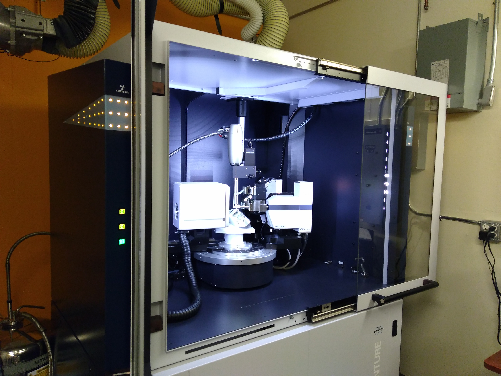
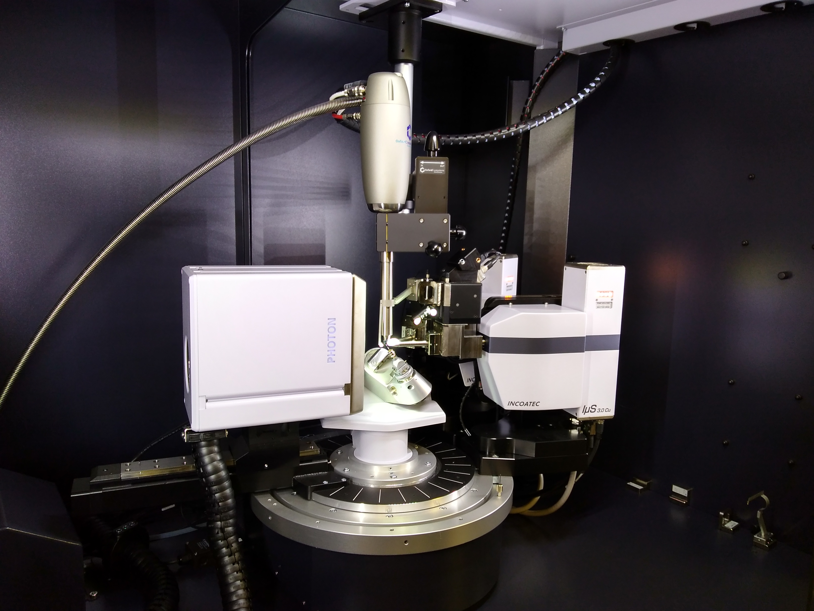

The Cal Poly Pomona Crystallography Co-op (CPPCC) houses a Bruker D8 Venture diffractometer with Cu and Mo microsources and a PHOTON II detector. The instrument purchase was supported by the Department of Defense (DoD) Research and Education Program for Historically Black Colleges and Universities and Minority-Serving Institutions (HBCU/MI) Equipment/Instrumentation Grant under contract #W911NF-17-1-0537.
Please contact Dr. Stieber (sestieber [at] cpp [dot] edu) for any inquiries regarding use of the instrument. Please fill out our sample submission form if sending samples for analysis (link).
Crystallography Teaching Resources (created by CPPCC)
Setting up a hanging drop protein crystallization video tutorial (link)
Analyzing protein crystals using a microscope video tutorial (link)
 
News Stories
Feb. 16, 2018: InlandEmpire.US (link)
Feb. 15, 2018: PolyCentric (link)